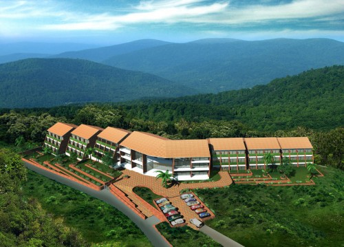
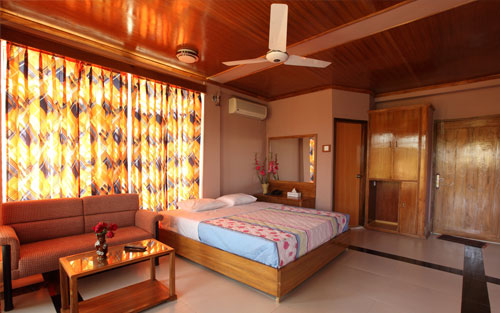
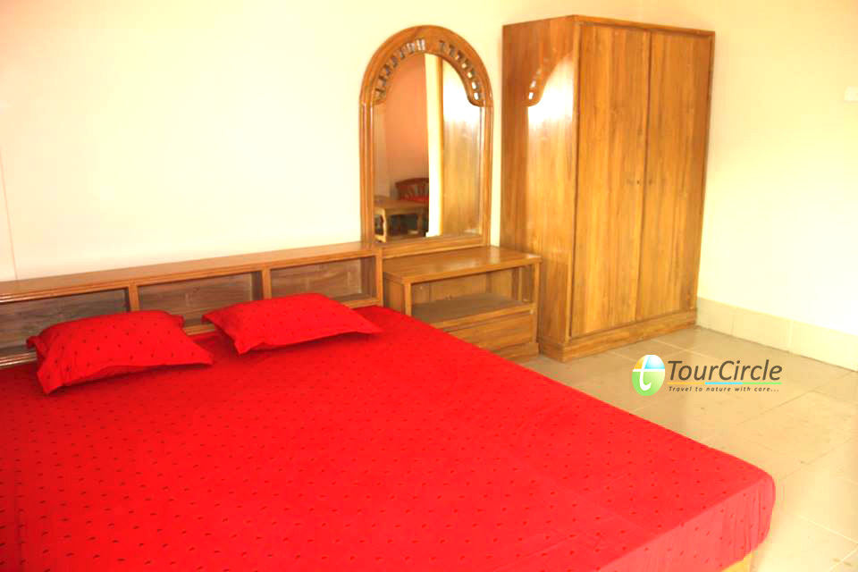
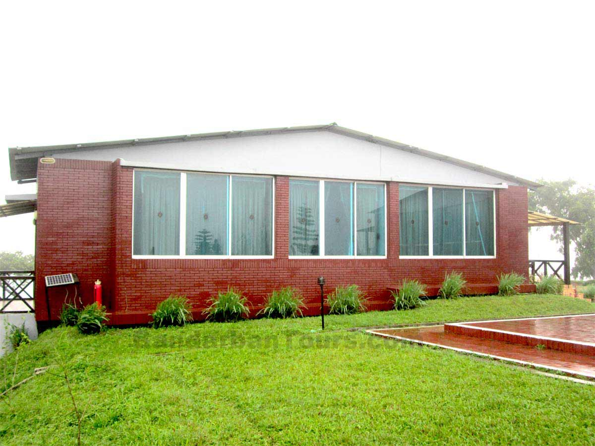

Osing Tong Resort Bandarban
Osing Tong Resort Bandarban Executive Suite Hill View 450 Sqft.
room time share ownership slot (shared owner basis: 4 days per year + profit).
Osing Tong is everything a resort should be. Set on four n half acres of landscaped hilltop,
it is a self contained island of tranquility amidst lush green foliage. It is under construction
project which consists of the three-storied building with one hundred twelve luxurious world class
double rooms and suites. it is designed for individual and collective privacy. It also contains a swimming pool,
gym, game zone, music café. Large restaurant, a banquette hall, mini Cineplex and mini park for kids with car parking
facilities. [Note: The price quoted is per slot. Size of each slot is 4 days per year. Anyone can buy any number of
slots at a time and can enjoy his/her suite along with family or friends and earn profit life time. Suite owner has right
to sale his/her suite after completing the payment & handover the project.]

Green Peack Resorts
Greenpeak Resorts Bandarban is a luxury and deluxe resort located in Recha,
1/2 km ahead of Meghla. This resort offers a friendly, welcoming and relaxing
atmosphere for the customers. Green Peck Resort provide a multi cuisine restaurant
, huge swimming pool, modern amenities and a group of trained staffs to make sure a
memorable experience for the clients.

Hotel Hill Queen Bandarban
Hotel Hill Queen is situated at Powroshova Bazar, Bandarban Main Road, Chittagong, Bangladesh.
There are VIP Suite, Royal Suite, Super Deluxe, Deluxe, Couple + Couple, Couple +
Single and Couple/Single room facilities in this hotel. There are AC and Non AC rooms are
available in this Hotel. They have a well-decorated conference room with the capacity of over 100 people.
Hotel Hill View has their own Restaurant. They provide delicious dishes with Chinese, Thai and Bengali food
items at reasonable price. They offer special discount in off season for non AC rooms and group booking for long stay.
Check-in time is 12:01pm and checkout time from hotel Hill Queen is at 11:30am.

Nilgiri Resort
Nilgiri Resort is the top most resort in Bangladesh.
Nilgiri Resort is located 47 kilometer South-East of Bandarban town on
Chimbuk Range at a height of 2400 feet from sea level. Nilgiri Resort has
a high class residential accommodation that makes a difference.
Bangladesh Army in Bandarban established and maintained Nilgiri Resort.
To visit Nilgiri Resort traveler have to seek permission from Brigade HQ of Bangladesh
Army in Bandarban. The place is accessible by road. It is better to have your own vehicle.
It may take 2 Hrs Drive from Bandarban. Nilgiri Resort area is locally known as Darjeeling of Bangle.
There is a nice Restaurant in Nilgiri Resort and have 5 cottages.